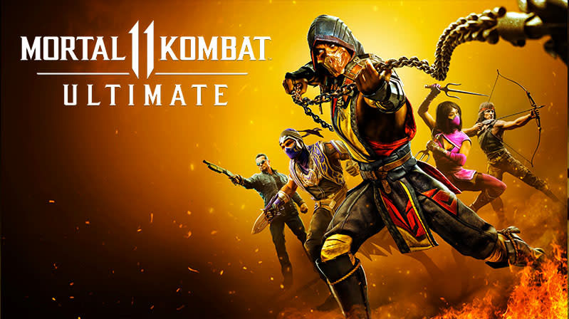
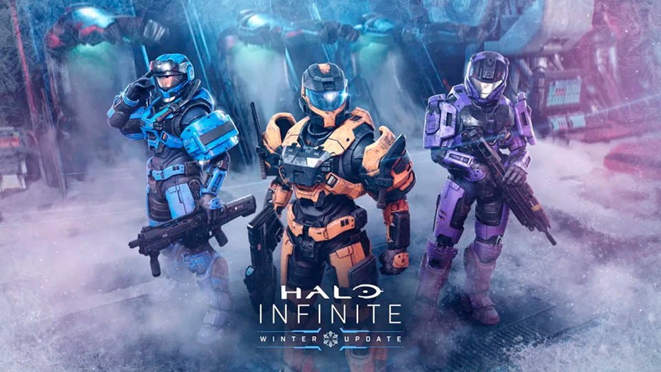
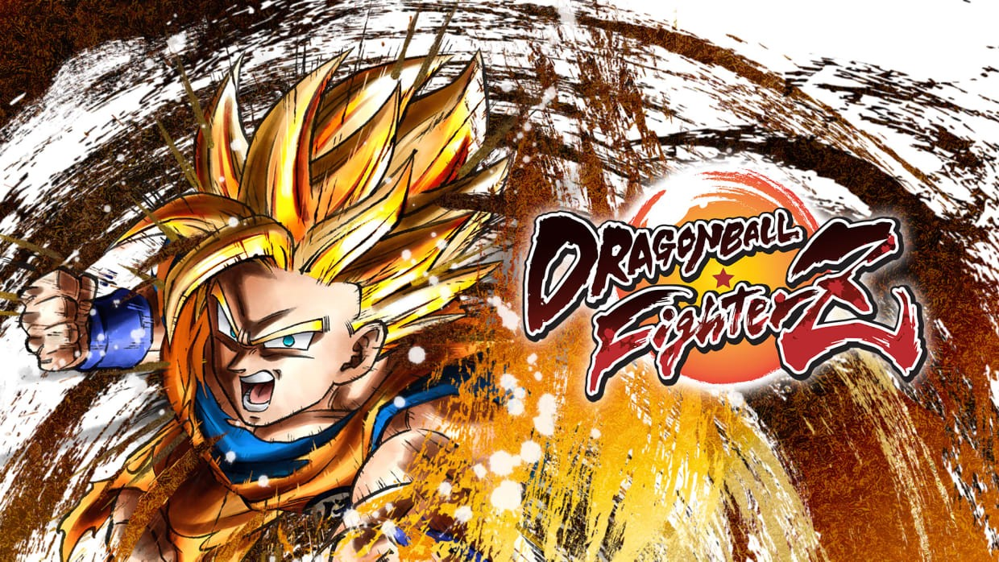

Juegos destacados en competicion

MORTAL KOMBAT 11
Es un videojuego de lucha desarrollado por NetherRealm Studios y publicado por Warner Bros. Interactive Entertainment. Se ejecuta en una versión muy modificada de Unreal Engine 3
Al igual que los dos juegos anteriores de la serie, Mortal Kombat 11 es un videojuego de lucha 2.5D. Junto con el regreso de los Fatalities y Brutalities, se introducen nuevas características de juego, como Fatal Blows y Krushing Blows.

HALO INFINITE
Es un videojuego de disparos en primera persona de la franquicia de videojuegos de ciencia ficción creada por Bungie Studios y actualmente desarrollada por 343 Industries.
Es exclusivo para las plataformas Xbox One, Microsoft Windows y Xbox Series X|S.

DRAGON BALL FIGTHERZ
Es un videojuego de lucha en 2D desarrollado por Arc System Works y distribuido por Bandai Namco Entertainment, basado en la franquicia Dragon Ball.1 Su lanzamiento a nivel internacional se produjo el 26 de enero de 2018, mientras que en Japón fue lanzado el 1 de febrero del mismo año, para las plataformas PlayStation 4, Xbox One y Microsoft Windows.